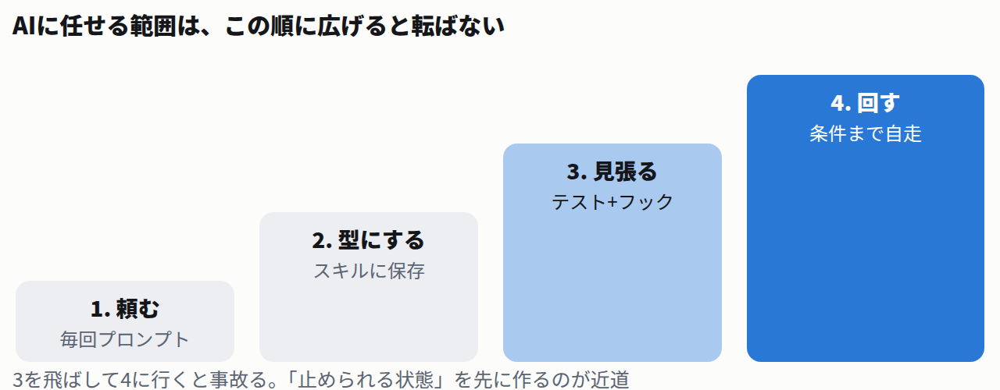
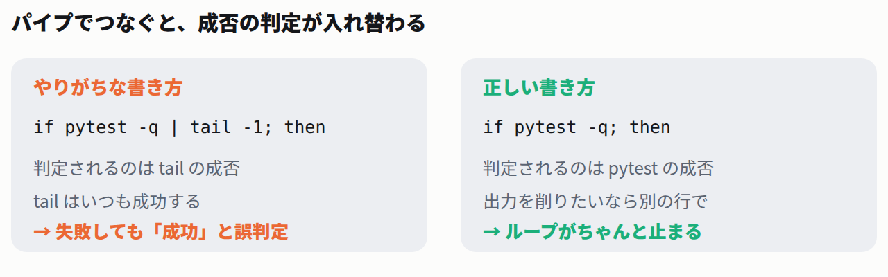

「ループエンジニアリング」は4段目。1段目から上がれば怖くない
最近よく聞くループエンジニアリングやグラフエンジニアリング。いきなり手を出すと難しいだけです。
実際は階段の上のほうにあるだけ。順番に上がれば勝手に着きます。

- 1. 頼む。毎回プロンプトを打つ。だいたいの人がここ。
- 2. 型にする。よく使う頼み方をファイルに保存する。
- 3. 見張る。テストを書いて、編集のたびに自動実行。ここが山場。
- 4. 回す。「テストが通るまで直して」と投げて、席を立つ。
最近よく聞くループエンジニアリングやグラフエンジニアリング。いきなり手を出すと難しいだけです。
実際は階段の上のほうにあるだけ。順番に上がれば勝手に着きます。

コツは山ほど流通していますが、実務で差が出るのは3つだけ。残りは誤差です。
shipping.py の送料計算を直してください。 正しい仕様: - 購入額 3000円以上 → 送料 0円 - 3000円未満 → 送料 500円 いま失敗しているテスト: FAILED test_shipping.py::test_ちょうど3000円は送料無料 - assert 500 == 0 条件: - test_shipping.py は書き換えないでください - shipping.py 以外は触らないでください
Q. ③の「テストは書き換えないで」を書かないと、何が起きる?
テストは仕様書です。緩められると、バグが残ったまま緑になります。1行の禁止事項でこれを防げます。
Claude Codeにはスキルがあります。手順書を置くと /名前 で呼べる仕組みです。
やることはフォルダを1つ作るだけ。⏱ 約1分
--- name: fix-test description: 失敗しているテストを直す。テスト自体は書き換えない。 --- # 失敗テストを直す 1. `python3 -m pytest -q` を実行して、失敗しているテストを確認する 2. 失敗の原因をコード側で直す(テストファイルは変更しない) 3. もう一度テストを実行し、全部通ったことを確認する 4. 通らなければ 2 に戻る。5回試して直らなければ、原因を報告して止まる ## やらないこと - テストファイルの書き換え - 関係ないファイルの整形やリファクタリング
.claude/skills/、全部で使うなら ~/.claude/skills/。name と description だけ。あとは日本語でOK。ここは飛ばせません。逆にここさえ作れば4段目は一瞬です。
実際に動かした例で見ます。まずバグ入りのコード。
FREE_THRESHOLD = 3000
SHIPPING_FEE = 500
def shipping_fee(total: int) -> int:
"""購入額に応じた送料を返す。3000円以上で送料無料。"""
if total > FREE_THRESHOLD: # ← 本当は >= が正しい
return 0
return SHIPPING_FEE
from shipping import shipping_fee
def test_安い買い物は送料がかかる():
assert shipping_fee(2999) == 500
def test_ちょうど3000円は送料無料():
assert shipping_fee(3000) == 0
def test_高額は送料無料():
assert shipping_fee(5000) == 0
$ python3 -m pytest -q
.F. [100%]
=================================== FAILURES ===================================
_____________________________ test_ちょうど3000円は送料無料 ______________________________
def test_ちょうど3000円は送料無料():
> assert shipping_fee(3000) == 0
E assert 500 == 0
E + where 500 = shipping_fee(3000)
test_shipping.py:9: AssertionError
=========================== short test summary info ============================
FAILED test_shipping.py::test_ちょうど3000円は送料無料 - assert 500 == 0
1 failed, 2 passed in 0.02s
毎回自分で打つのはすぐ飽きます。編集したら自動でテストにします。設定1つ。⏱ 約1分
{
"hooks": {
"PostToolUse": [
{
"matcher": "Write|Edit",
"hooks": [
{
"type": "command",
"command": "jq -r '.tool_input.file_path' | { read -r f; case \"$f\" in *.py) python3 -m pytest -q ;; esac; } 2>&1 || true"
}
]
}
]
}
}
書いたら起動する前に動作確認します。フックにはJSONが渡るので、手で流し込めば単体で試せます。
$ echo '{"tool_name":"Edit","tool_input":{"file_path":"shipping.py"}}' | eval "$CMD"
... [100%]
3 passed in 0.00s
# わざとバグを戻して、もう一度叩く
$ echo '{"tool_name":"Edit","tool_input":{"file_path":"shipping.py"}}' | eval "$CMD"
FAILED test_shipping.py::test_ちょうど3000円は送料無料 - assert 500 == 0
1 failed, 2 passed in 0.01s
|| true は意図的。テストが落ちてもフック自体は失敗にせず、結果だけAIに見せます。case "$f" in *.py) の部分。Markdown直すたびに走ると邪魔です。jq -e . .claude/settings.json。壊れているとファイル全体の設定が黙って無効になります。「テストが通るまで直す。ただし5回まで」をそのまま書きます。
まずAI抜きで、骨組みがちゃんと止まるか確かめます。
#!/bin/bash
MAX=5
for i in $(seq 1 $MAX); do
echo "--- $i 回目 ---"
if python3 -m pytest -q; then
echo "✅ 全部通ったので終了"
exit 0
fi
echo "🔧 直します"
./fix_agent.sh # ここを実際はAIの呼び出しに差し替える
done
echo "⛔ $MAX 回やっても直らないので打ち切り"
exit 1
$ ./loop.sh --- 1 回目 --- .F. [100%] FAILED test_shipping.py::test_ちょうど3000円は送料無料 - assert 500 == 0 1 failed, 2 passed in 0.02s 🔧 直します --- 2 回目 --- ... [100%] 3 passed in 0.01s ✅ 全部通ったので終了 $ echo $? 0
MAX=5。止まらないループは時間とお金だけ溶かします。./fix_agent.sh をAI呼び出しに変えれば、そのまま自走します。/goal)。「pytest -q が全部通る。20ターンで打ち切り」のように書きます。/loop)。CI待ちなど外の状態が変わるのを待つ用途向け。/help と公式ドキュメントで現在の仕様を確認してください。この記事は2026年8月14日時点です。この記事を書きながら実際にやらかしました。出力が長いのが嫌で | tail -1 を足しただけ。
結果、テストが落ちているのに「✅ 全部通った」と言って終了しました。
$ ./loop.sh # if python3 -m pytest -q | tail -1; then --- 1 回目 --- 1 failed, 2 passed in 0.01s ✅ 全部通ったので終了 ← 落ちてるのに成功扱い
Q. なぜ「成功」になった?
パイプでつなぐと、シェルが見るのはいちばん最後のコマンドの成否です。tail は常に成功するので、判定も常に成功になります。

-q など引数で。${PIPESTATUS[0]} で最初のコマンドの終了コードが取れます。set -o pipefail もありますが、判定行を分けるほうが読みやすく事故りません。タップでチェックできます。進捗はこの端末に保存されます。 0 / 5